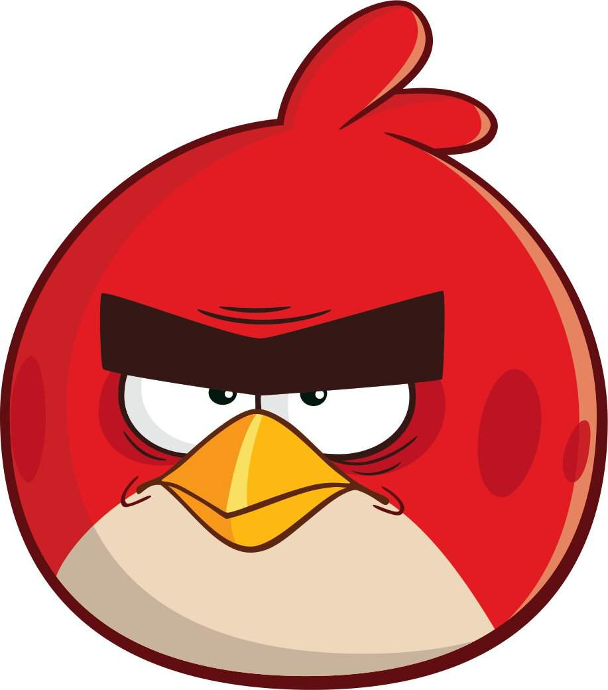
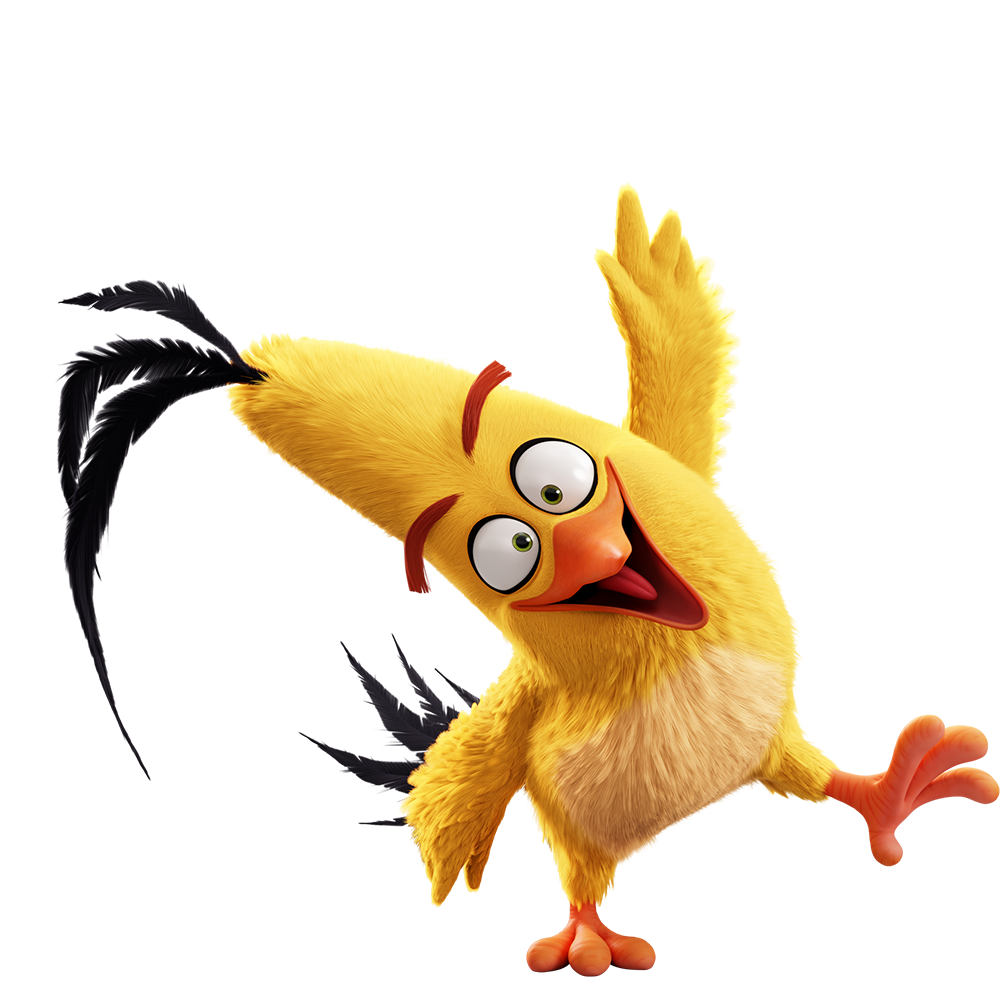
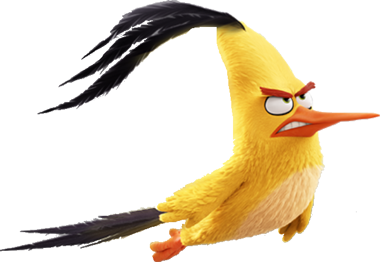
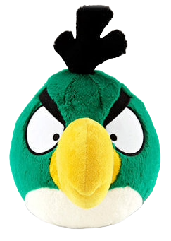
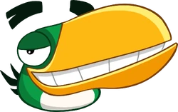

Meet the Angry Birds!!
- Red
- Red is the original angry bird as he became angry due to excessive bullying.
After his bullying had ended he never healed and adopted a Philosphy.
"If I cant be happy, then no one can."

- Chuck
- "If you dont live fast you'll die old."
Chuck is an easygoing bird, not really the angriest but wont let you slide either,
he is supersonic fast without leaving any sonic booms
so he basically is an environmentally friendly bird and a felon.


- Hal
- "In life there's nothing to look forward to, so you should just turn back and attack the problem instead of "going forward"
pretending to be happy."
Hal's philosophy really hits deep especially when you consider it.
He is part right and part wrong.
I wouldn't follow
his advice because I love being happy and it feels great.
Hal never said the green sentence.


- Bomb
- "When your sad let it all out."
He takes his own advice literally and considering how he isn't
in the FBI's
most wanted because of involuntary terrorism really proves he's not an angry bird
just a nice sensetive guy seeking
comapnionship.
- (Ethan) Mighty Eagle
- "I know I wasn't as great as I used to be but I promise you I am The Mighty Eagle."
He is a lazy retired angry bird who pees in his own river which is called
"The Fountain of Youth."
Wow is that the biggest lie ever.